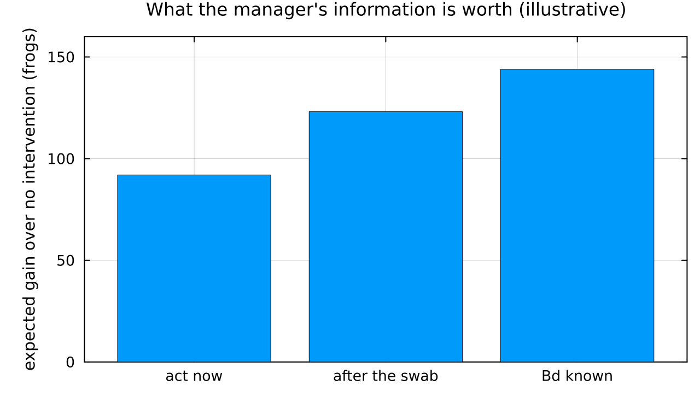

From influence diagrams and Bayesian networks to a decision table
Simon Frost
- Motivation
- A published example: the umbrella
- What the table adds
- A diagram of our own: the pond
- Which variables make the state
- From Bayesian networks
- What to take away
Motivation
The earlier tutorials start from a payoff table. Many decision problems are first drawn as an influence diagram: chance variables, one decision, what the decision sees when it is taken, and a utility. The diagram and the table are two descriptions of the same problem, and normal_form turns the first into the second:
- the actions are the options of the decision;
- the state is the chance variable the payoff depends on, with its probabilities as the belief;
- the payoff
Q[a, θ]is the expected utility of actionain stateθ; - what the decision observes becomes an experiment,
L[z, θ] = P(z | θ).
Once the problem is a table, everything in this package applies to it: the other decision rules, regret, the value of each possible result, sets of priors.
The diagrams are built and solved by InfluenceDiagrams.jl, which is not a dependency of this package. normal_form is available once it is loaded. It handles diagrams with one decision, by enumerating the joint distribution, so it is for small diagrams, and its numbers are floating point.
A published example: the umbrella
InfluenceDiagrams.jl ships the umbrella problem with the numbers of Shachter (1986). The weather is sunny with probability 0.7 and rainy otherwise, a forecast is seen before deciding whether to take an umbrella, and the utilities are the source’s own (no unit is attached to them). Leaving the umbrella is the baseline: it is what happens if nothing is done.
using DecisionAnalysis
using InfluenceDiagrams: InfluenceDiagrams
const ID = InfluenceDiagrams
include(joinpath("..", "_common.jl"))
umbrella = ID.umbrella_model()
form = normal_form(umbrella; states=:Weather, baseline=:leave)
form.problem.payoffPayoffTable{Float64}: 2 actions × 2 states
| action | sunny | rainy |
|---|---|---|
take | 20.0 | 70.0 |
leave | 100.0 | 0.0 |
(decision=form.decision, state=form.states, observed=form.observed,
belief=round.(probabilities(form.problem.belief); digits=3))(decision = :Umbrella, state = [:Weather], observed = [:Forecast], belief = [0.7, 0.3])The forecast is the experiment. Each column is a state, each row a forecast:
labelled_table("forecast", signal_labels(form.experiment), state_labels(form.problem),
form.experiment.likelihood)| forecast | sunny | rainy |
|---|---|---|
sunny | 0.7 | 0.15 |
cloudy | 0.2 | 0.25 |
rainy | 0.1 | 0.6 |
The two packages share no code, so their answers check each other. The diagram’s own solver gives the best expected utility with and without the forecast, and its structural values of information; the table gives the same numbers as evsi and evpi.
blind = ID.without_information(umbrella, :Umbrella, :Forecast)
md_table(["quantity", "from the diagram", "from the table"],
[["expected utility with no forecast", ID.optimize(blind).expected_utility,
act_now_value(form.problem)],
["expected utility with the forecast", ID.optimize(umbrella).expected_utility,
value_with_information(form.problem, form.experiment)],
["value of the forecast", ID.expected_value_of_information(blind, :Forecast, :Umbrella),
evsi(form.problem, form.experiment)],
["value of knowing the weather",
ID.expected_value_of_perfect_information(blind, :Umbrella; variables=[:Weather]),
evpi(form.problem)]]; digits=4)| quantity | from the diagram | from the table |
|---|---|---|
| expected utility with no forecast | 70 | 70 |
| expected utility with the forecast | 77 | 77 |
| value of the forecast | 7 | 7 |
| value of knowing the weather | 21 | 21 |
These are the published values: 70 without the forecast, 77 with it, and 91 with the weather known, so the forecast is worth 7 and perfect information 21.
The best policy is also the same. The diagram’s solver returns an action for each forecast; voi_profile returns the best action after each result, with what that result is worth.
policy = ID.policy_table(ID.policies(ID.optimize(umbrella).strategy)[:Umbrella])
profile = voi_profile(form.problem, form.experiment)
md_table(["forecast", "probability", "diagram's policy", "best action from the table",
"value of this forecast"],
[[o.signal, o.probability, a, o.best, o.value]
for (o, a) in zip(profile.outcomes, policy)]; digits=3)| forecast | probability | diagram’s policy | best action from the table | value of this forecast |
|---|---|---|---|---|
sunny | 0.535 | leave | leave | 0 |
cloudy | 0.215 | leave | leave | 0 |
rainy | 0.25 | take | take | 28 |
Only a forecast of rain changes what is done, and the whole value of the forecast comes from it.
What the table adds
The diagram’s solver maximises expected utility. With the table, the same problem can be read under other rules and from the side of regret.
md_table(["rule", "chosen"],
[[name, decide(form.problem, rule).chosen]
for (name, rule) in ["expected utility" => MaxExpectedUtility(),
"maximin" => Maximin(), "minimax regret" => MinimaxRegret()]])| rule | chosen |
|---|---|
| expected utility | leave |
| maximin | take |
| minimax regret | leave |
regret_table(form.problem)RegretTable{Float64}: regret, 2 actions × 2 states
| action | sunny | rainy |
|---|---|---|
take | 80.0 | 0.0 |
leave | 0.0 | 70.0 |
The weather’s probability can be put in doubt too. Suppose the chance of rain is only known to lie between 0.2 and 0.5 (illustrative). The table goes with a credal set, and the value of perfect information becomes a range.
doubtful = DecisionProblem(form.problem.payoff,
CredalSet(state_labels(form.problem), [[0.8, 0.2], [0.5, 0.5]]);
baseline=:leave)
robust_evpi(doubtful)RobustVOI(evpi under GammaMaximin: 35.0; envelope [14.0, 35.0], upper end at the prior [0.5, 0.5])A diagram of our own: the pond
The pond of Experiments and EVSI as a diagram: Bd is absent, at low prevalence or at high prevalence; a swab is negative or positive; the manager sees the swab and then does nothing, treats the frogs or disinfects the pond; the utility is uninfected minus infected frogs. All numbers are illustrative, and they are the ones of that tutorial.
states = [:absent, :low_prevalence, :high_prevalence]
actions = [:no_intervention, :antifungal_baths, :disinfect_pond]
diagram = ID.influence_diagram(:Bd => states, :Swab => [:negative, :positive],
:Response => actions;
mechanisms=[:Swab => :Bd], decisions=[:Response => :Swab],
utilities=[:Frogs => (:Bd, :Response)])
uninfected = [500 300 100; 470 380 250; 350 340 320] # action by state
infected = [0 150 250; 0 60 120; 0 10 20]
pond = ID.InfluenceDiagramModel(diagram)
pond = ID.bind_cpt(pond, [:Bd => [0.5, 0.3, 0.2],
:Swab => [0.95 0.05; 0.4 0.6; 0.05 0.95]]) # state by result
pond = ID.bind_utility(pond, :Frogs => Float64.(permutedims(uninfected .- infected)))
pond_form = normal_form(pond; states=:Bd, baseline=:no_intervention)
pond_form.problem.payoffPayoffTable{Float64}: 3 actions × 3 states
| action | absent | low_prevalence | high_prevalence |
|---|---|---|---|
no_intervention | 500.0 | 150.0 | -150.0 |
antifungal_baths | 470.0 | 320.0 | 130.0 |
disinfect_pond | 350.0 | 330.0 | 300.0 |
The table is the one the earlier tutorial wrote down directly, and the values agree with it and with the diagram’s solver:
md_table(["quantity", "value"],
[["payoff table equals uninfected − infected", pond_form.problem.payoff.Q == uninfected .- infected],
["best action with no swab", decide(pond_form.problem, MaxExpectedUtility()).chosen],
["its gain over no intervention (frogs)", maximum(expected_gain_over_baseline(pond_form.problem))],
["EVSI of the swab, from the table", evsi(pond_form.problem, pond_form.experiment)],
["the same, from the diagram",
ID.expected_value_of_information(ID.without_information(pond, :Response, :Swab),
:Swab, :Response)],
["EVPI", evpi(pond_form.problem)]]; digits=4)| quantity | value |
|---|---|
| payoff table equals uninfected − infected | yes |
| best action with no swab | antifungal_baths |
| its gain over no intervention (frogs) | 92 |
| EVSI of the swab, from the table | 31.1 |
| the same, from the diagram | 31.1 |
| EVPI | 52 |
values = [act_now_value(pond_form.problem),
value_with_information(pond_form.problem, pond_form.experiment),
act_now_value(pond_form.problem) + evpi(pond_form.problem)]
baseline_value = values[1] - maximum(expected_gain_over_baseline(pond_form.problem))
plt = Plots.bar(["act now", "after the swab", "Bd known"], values .- baseline_value;
legend=false, linewidth=0.5, ylims=(0, 160),
ylabel="expected gain over no intervention (frogs)",
title="What the manager's information is worth (illustrative)")
png_figure(plt)
Which variables make the state
states names the chance variables that form the state. It must hold everything the utility depends on. By default it is every chance variable that could be observed before the decision, which here includes the swab: the swab is then part of the state, nothing is left to observe, and learning the swab alone is a partial value.
full = normal_form(pond; baseline=:no_intervention)
swab_of_each_state = repeat([:negative, :positive]; inner=length(states))
(states=full.states, experiment=full.experiment, joint_states=state_labels(full.problem))(states = [:Bd, :Swab], experiment = nothing, joint_states = [:absent_negative, :low_prevalence_negative, :high_prevalence_negative, :absent_positive, :low_prevalence_positive, :high_prevalence_positive])(evpi_of_the_joint_state=evpi(full.problem),
evppi_of_the_swab=evppi(full.problem, swab_of_each_state),
evsi_of_the_swab=evsi(pond_form.problem, pond_form.experiment))(evpi_of_the_joint_state = 52.0, evppi_of_the_swab = 31.100000000000023, evsi_of_the_swab = 31.099999999999966)The value of the swab is the same either way: an EVSI when the swab is an experiment on the state, an EVPPI when it is one coordinate of a larger state.
From Bayesian networks
Once its decision is made, an influence diagram is an ordinary Bayesian network. So a decision problem is also a set of networks, one for each action, and that is how networks are usually built in ecology: one network with a management node, or one network per management scenario. normal_form takes them directly, with no diagram in between. A network has no utility, so the payoff is named: a count read from its nodes.
using BayesianNetworks: BayesianNetworks
const BN = BayesianNetworks
network = BN.bayesnet(:Bd => states, :Swab => [:negative, :positive],
:Visual => [:no_signs, :signs], :Response => actions;
mechanisms=[:Swab => (:Bd,), :Visual => (:Bd,)])
network = BN.bind_cpt(BN.BayesModel(network),
[:Bd => [0.5, 0.3, 0.2], :Swab => [0.95 0.05; 0.4 0.6; 0.05 0.95],
:Visual => [0.55 0.45; 0.5 0.5; 0.45 0.55],
:Response => [1 / 3, 1 / 3, 1 / 3]])
frogs = Float64.(permutedims(uninfected .- infected)) # Bd by response
from_network = normal_form(network; decision=:Response, states=:Bd,
observed=(:Swab, :Visual),
outcome=(:Bd, :Response) => frogs, baseline=:no_intervention)
from_network.problem.payoff.Q ≈ pond_form.problem.payoff.QtrueThe management node’s own probabilities play no part: each action’s network is the intervention that sets the node to that action. The pond now has a second test, a visual check for signs of disease, with the likelihood of Comparing experiments.
Which node is worth monitoring? Every observed variable comes back as an experiment of its own, so the question is one table.
md_table(["observe", "EVSI (frogs)", "share of EVPI"],
vcat([[String(x), evsi(from_network.problem, e),
evsi(from_network.problem, e) / evpi(from_network.problem)]
for (x, e) in pairs(from_network.experiments)],
[["both", evsi(from_network.problem, from_network.experiment),
evsi(from_network.problem, from_network.experiment) /
evpi(from_network.problem)]]); digits=3)| observe | EVSI (frogs) | share of EVPI |
|---|---|---|
| Swab | 31.1 | 0.598 |
| Visual | 0 | 0 |
| both | 31.1 | 0.598 |
A state, and anything observed before the decision, must not depend on the action. The bridge checks that across the networks and refuses otherwise. In the reference habitat network that BayesianNetworks.jl ships, soil moisture is downstream of irrigation, so it cannot be observed before deciding how much to irrigate:
habitat = BN.reference_habitat_model()
occupied = :Occupancy => (absent=0, present=100) # occupied sites of 100
try
normal_form(habitat; decision=:Irrigation, states=:Climate, observed=:SoilMoisture,
outcome=occupied)
catch err
print(sprint(showerror, err))
endArgumentError: the distribution of [:Climate, :SoilMoisture] under high differs from that under low: a state, or something observed before the decision, cannot depend on the actionSeveral networks for one system
The networks can also stand for hypotheses: rival structures, or the networks of several experts. The states are then the hypotheses, and the payoff is each action’s expected outcome under each. Here the published network is set beside one in which habitat quality matters much less to occupancy, and irrigating is charged three occupied sites lost downstream (both illustrative). Less irrigation is the baseline.
doubtful = BN.bind_cpt(habitat, :Occupancy => [0.6 0.4; 0.5 0.5])
by_action(model) = (; low=BN.do_intervention(model, :Irrigation => :low),
high=BN.do_intervention(model, :Irrigation => :high))
count = [occupied, :Irrigation => (low=0, high=-3)]
rivals = normal_form((; published=by_action(habitat), doubtful=by_action(doubtful));
outcome=count, baseline=:low)
rivals.problem.payoffPayoffTable{Float64}: 2 actions × 2 states
| action | published | doubtful |
|---|---|---|
low | 45.7933 | 44.6897 |
high | 47.3703 | 42.5219 |
The two networks disagree: more irrigation is better under the published one and worse under the other. With no probabilities on the hypotheses the belief is a scenario set, and the rules that need none apply. With weights there is an expectation, and a value of finding out which network is right.
weighted = normal_form((; published=by_action(habitat), doubtful=by_action(doubtful));
outcome=count, prior=[3 // 4, 1 // 4], baseline=:low)
md_table(["quantity", "value"],
[["maximin, no weights", decide(rivals.problem, Maximin()).chosen],
["minimax regret, no weights", decide(rivals.problem, MinimaxRegret()).chosen],
["best expected, weights 3/4 and 1/4",
decide(weighted.problem, MaxExpectedUtility()).chosen],
["its gain over low irrigation (sites of 100)",
maximum(expected_gain_over_baseline(weighted.problem))],
["value of knowing which network is right (sites of 100)",
evpi(weighted.problem)]]; digits=3)| quantity | value |
|---|---|
| maximin, no weights | low |
| minimax regret, no weights | low |
| best expected, weights 3/4 and 1/4 | high |
| its gain over low irrigation (sites of 100) | 0.641 |
| value of knowing which network is right (sites of 100) | 0.542 |
What to take away
normal_form(model; states, baseline)turns a single-decision influence diagram into aDecisionProblemand the decision’s information into anExperiment. It needs InfluenceDiagrams.jl loaded.- The diagram’s structural values of information are
evsiandevpion the table, and the two packages, which share no code, agree on the published umbrella problem. - The table opens the diagram to what the diagram’s solver does not do: other decision rules, regret, the value of each result, sets of priors.
- The state must carry everything the utility depends on. A variable can be an experiment on the state or part of it; its value is the same.
- A set of Bayesian networks, one for each action, is a decision problem too:
normal_form(network; decision, states, outcome, observed)reads it off one network with a management node, and gives an experiment for every observed variable. Networks for rival hypotheses give a table whose states are the hypotheses. - One decision only, small diagrams only, and floating-point numbers. Sequential problems are for
adaptive_management(Learning while managing).